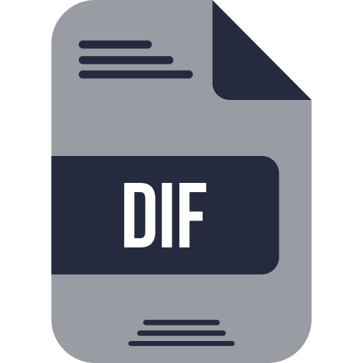

Articles
-
HTTP e REST na Prática: Autenticação vs autorização
Explicando autenticação, autorização, HTTPS, CORS e etc.
-

HTTP e REST na Prática: Conceitos e Boas práticas
Implementando uma API REST com diversas funcionalidades.
-
 Entendendo algoritmos de diff de texto
Entendendo e implementando algoritmo de Myers com Rust.
-

Criando o meu próprio git
Entendendo o funcionamento interno do maior sistema de versionamento do mundo.
-

Hello world
Introduçào ao que realmente importa.